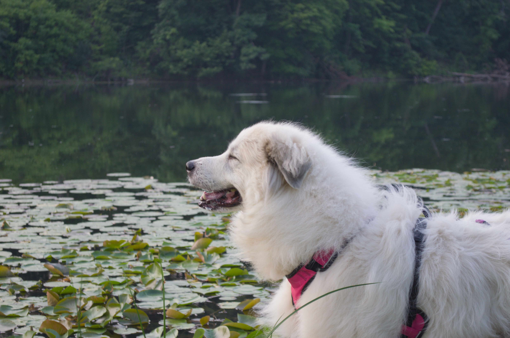
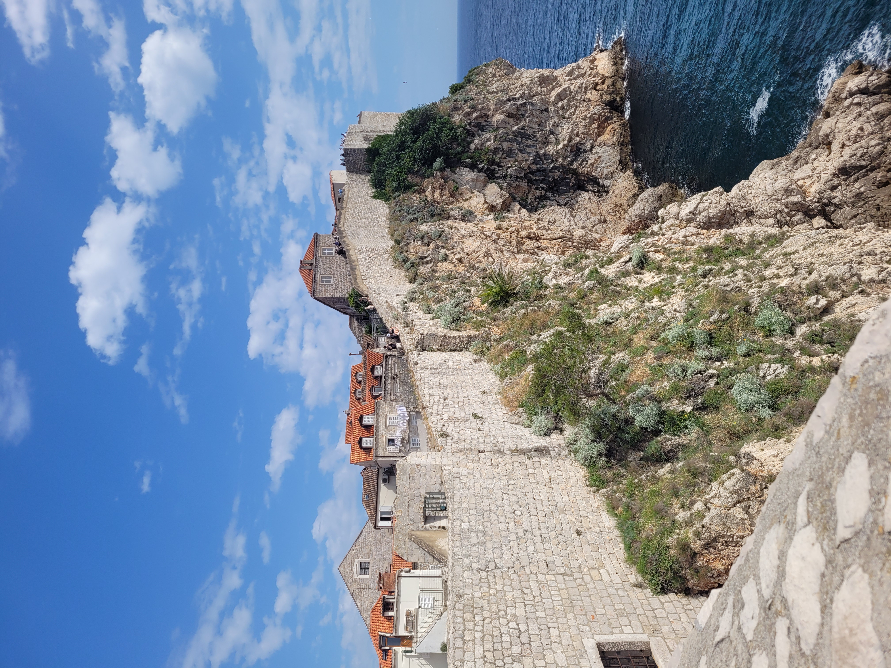
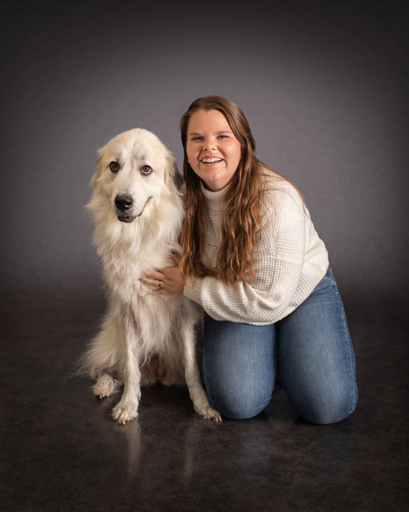

Applied and Computational Mathematics and Statistics, University of Notre Dame
Connor Parrow
Numerical analysis & multiphysics PDEs
Advisor: Martina Bukač
I am a PhD candidate in Applied Mathematics at the University of Notre Dame, where I work on numerical methods for coupled systems of partial differential equations with my advisor Martina Bukač. My research focuses on partitioned schemes for fluid-poroelastic structure interaction, with an emphasis on stability and error analysis for the resulting algorithms.
I found my love for mathematics and the structure it provides during my undergraduate studies at Hobart and William Smith Colleges (HWS) in Geneva, NY. As a pre-med student going into college, I was taking math classes as my elective second major because I enjoyed them but they soon became my favorite parts of the day. After graduating, I took a year as the Math Intern at HWS and then began my journey as a Ph.D. student at the University of Notre Dame in South Bend, IN. Being in an Applied and Computational Mathematics and Statistics program and my research in numerical analysis allows me to pursue my passion of mathematics while still tying it back to my pre-med/biology roots through cool applications.
You can find more about my current projects on the research page and a full list of my papers and talks on the publications page.
Outside of research, I am interested in football (Go Irish!) and spending time with my dog and husband. Below is a picture of my very photogenic dog Remy, she is a Great Pyrenees and yes, she sheds everywhere.


- Email cparrow@nd.edu
- CV Download (PDF)
- Google Scholar Profile
- GitHub connorparrow
